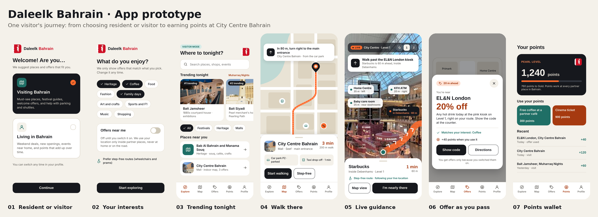

Daleelk Bahrain
Your guide to every place you visit in Bahrain. One app to find your way at festivals, heritage sites and malls, with live guidance indoors, offers from nearby businesses that match your interests, and one points balance everywhere.
Open the clickable prototype
- Resident or visitor: different suggestions and offers for each
- Trending tonight: what's popular now, like Bait Jamsheer and Bait Siyadi at Muharraq Nights
- Walk there and live guidance: outdoor routes, then arrows on the camera view inside the mall
- Offers as you pass: opt-in, matched to your interests
- One points wallet: across every partner place in Bahrain
Built for the Mutamahin 11th Cohort Startup Pitch Challenge (CFA Society Bahrain). Team: Mohammed Baqer (Lead · Product and business development), Zainab Taher (Tech), Hala Benlaba (Marketing and research).